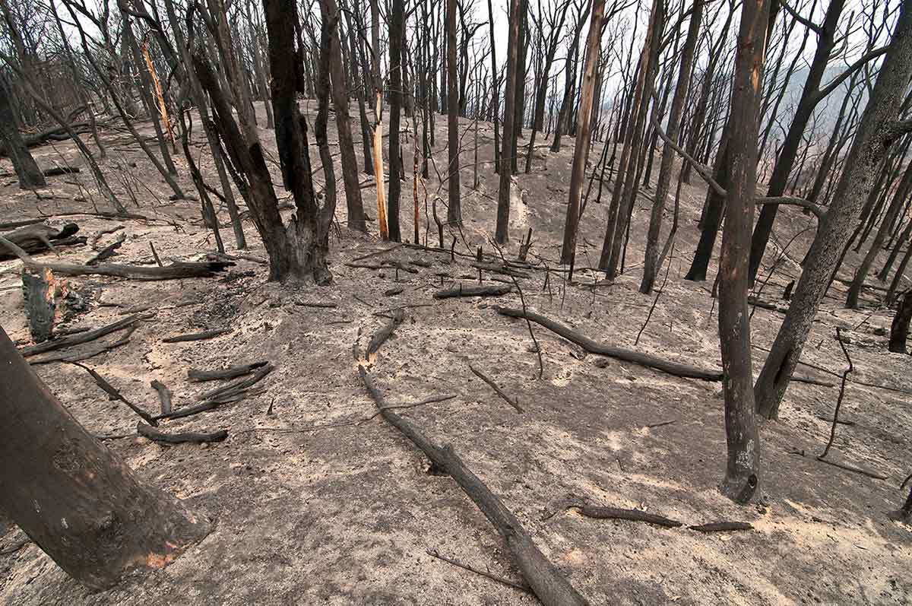
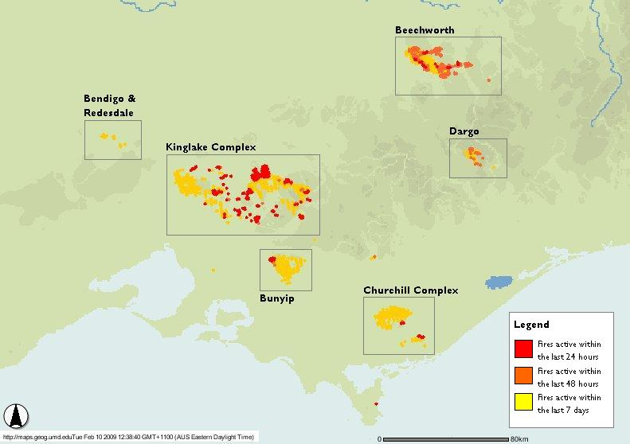
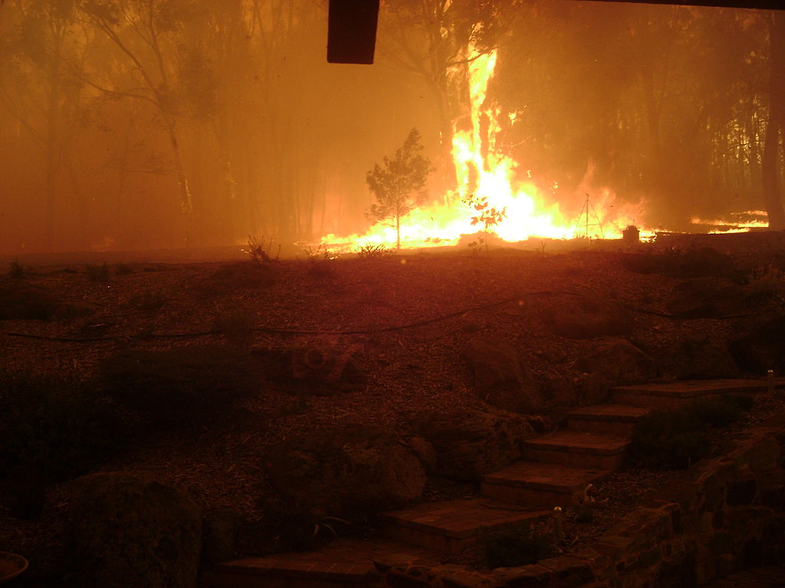
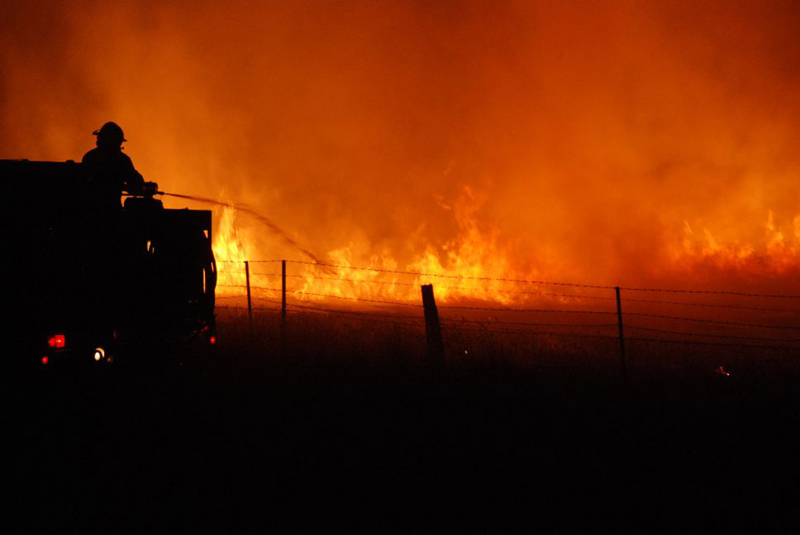
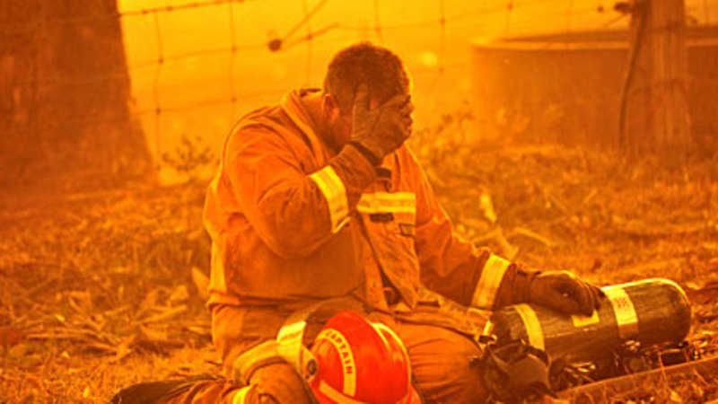

Black Saturday
On the morning of 7 February north westerly winds in excess of 100 kilometres per hour scoured the state, bringing hot, dry air from Central Australia. The storm helped create almost perfect fire conditions and when the winds brought down powerlines at 11.47am in Kilmore East, the resulting sparks ignited the fire.
05:00 am – Bunyip State Park fire jumped containment lines; no other major fire activity.Late morning – Many fires sprang up as temperatures rose and wind speeds increased.12:30 pm – Horsham fire commenced.
11:50 am – Power lines fell in high winds igniting the Kilmore East fire (Kinglake/Whittlesea area). The fire was fanned by 125 km/h (78 mph) winds, entered a pine plantation, grew in intensity, and rapidly headed southeast through the Wandong area.
12:30 pm – ABC Local Radio abandoned regular programming to cover the fire situation.
12:45 pm – Hume Freeway was closed after fire crews failed to contain Kilmore East fire. Early afternoon – ABC Local Radio received calls from residents of affected areas supplying immediate up-to-date information on fire activity.
The Kilmore East fire spread quickly and crossed the Hume Freeway at 1:58pm. It burnt through Wandong and arrived at Mount Disappointment at 3pm. The fire was then blown towards Humevale and Kinglake.
2:55 pm – Murrindindi Mill fire (Marysville area) first spotted from Mt Despair fire tower. 3:04 pm – temperature in Melbourne peaked at 46.4 °C (115.5 °F).
Between 3:30pm and 7pm the fire entered Kinglake National Park toward Strathewen, St Andrews, Kinglake, Kinglake West, Chum Creek, Steels Creek, Arthurs Creek, Flowerdale, Broadford, Healesville and Toolangi.
4:20 pm – Kilmore East fire front arrived at Strathewen. 4:20 pm – Murrindindi Mill fire impacted Narbethong. Mid-afternoon – smoke from Kilmore East firestorm prevented planes from mapping the fire edge.
4:30 pm – number of individual fires across the state increased into the hundreds. 4:30 pm – fire commenced at Eaglehawk, near Bendigo. 4:45 pm – Kilmore East fire front arrived at Kinglake.
5:00 pm – wind direction changed from northwesterly to southwesterly in Melbourne (see Fawkner Beacon Wind chart for 7 February 2009). 5:10 pm – air temperature in Melbourne dropped from over 45 °C (113 °F) to around 30 °C (86 °F) in fifteen minutes. 5:30 pm – wind change arrived at Kilmore East and Murrindindi Mill (Kinglake/Marysville) fire fronts. 5:45 pm – Kilmore East fire front arrived in Flowerdale.
6:00 pm – Beechworth fire commenced. 6:00 pm – Kilmore East fire smoke plume and pyrocumulus cloud reached 15 km (9.3 mi) high. 6:45 pm – Murrindindi Mill fire front arrived at Marysville.
8:30 pm – Victorian Health Emergency Co-ordination Centre notified Melbourne hospitals to prepare for burn victims. 8:57 pm – CFA chief officer first notified that casualties had been confirmed. 10:00 pm – Victoria Police announced an initial estimate of 14 fatalities.
The Kinglake Fire Complex was the most significant fire which evolved from the merging of the Kilmore East and Murrindindi fires on 8 February. It swept through state forests and national parks with flames recorded at 30 metres in height.

Map of fire locations on 10 February
Automatically generated imagery from the FIRMS Web Fire Mapper (ArcIMS)
NASA Fire Information for Resource Management System (FIRMS)

Fire approaching a residence in Steels Creek at 6:11 pm
Photo: Daniel Cleaveley

A firefighter battles a blaze in the Victorian township of Taggety on February 7, 2009.
Stephen Henderson/CFA via Getty Images

A scene from the Black Saturday bushfires
Photo: Jason South
❮
❯
{kind=link}
{kind=link}
{kind=link}
{kind=link}